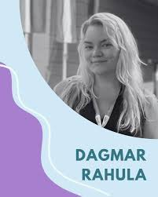
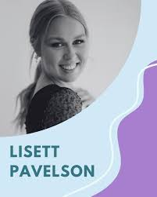

Minu töö eesmärk on abistada sportlast või mõne sooritusvaldkonna esindajat (nt artist või organisatsiooni juht) oma potentsiaali realiseerimisel ning seejuures toetada tema heaolu. Minu vastuvõtule on oodatud igas vanuses sportlased ja sooritajad erineva tasemega ning erinevatelt (spordi-)aladelt.

Lisett on väga aktiivne inimene ning seega tuli idee spordipsühholoogiale spetsialiseeruda tema sõnul talle väga loomulikult. Ta on tegelenud mitmeid aastaid laste liikumisharrastuse suurendamisega läbi treeneritöö ja sporditegevuste koordineerimisega. Liikumisharrastus on teda ennast samuti juba varajasest east saatnud erinevate spordialade näol.